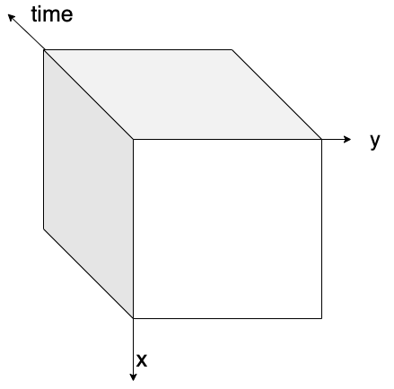
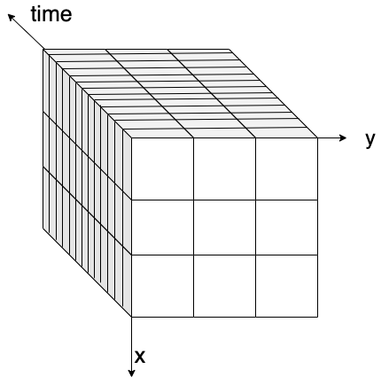
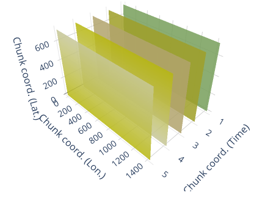
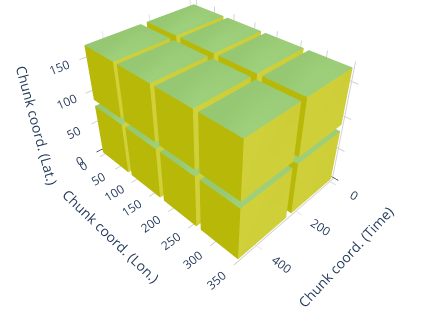

Data Formats and Performance#
Learning Objectives#
Understand what cloud native and cloud optimized data formats are
Understand how the cloud does computing more efficiently
Understand chunking
Understand how chunking impact performance
Outline#
Cloud Native and Cloud Optimized Data Formats
Why do we need them
What is their advantage over classical file formats
Not one format to rule them all.
Examples
Performance in the cloud
Tiling
Chunking
Cost of Scalability
Distributed Computing
Cloud Native and Cloud Optimized Data Formats#
Why do we need them#
Cloud native and cloud optimized formats have been specifically designed to optimize the storage, access and processing in cloud computing environments. The main difference between cloud optimized and cloud native comes from their origin: the first are an optimized version of an existing file format whereas the latter have been designed to be efficient for a cloud usage from the beginning. These formats are tailored to leverage the scalability, flexibility, and parallel processing capabilities of a cloud infrastructure, enabling efficient handling of large-scale datasets.

Video content in cooperation with Aimee Barciauskas (DevelopmentSeed) and Ryan Avery (DevelopmentSeed).
“Cloud-optimized means organizing so subsets of data can be read. Ideally, the data is also compressed. Both of these factors minimize the amount of data that has to be transferred across a network.”
Characteristics#
Cloud native and cloud optimized means mainly optimized read access, and more specifically partial and parallel reads capabilities. The main common characteristics are listed below.
Data Chunking#
When working with large data files or collections, it’s often impossible to load all the data into a single computer’s memory at once. In such cases, a data chunking approach can be highly effective. By dividing the dataset into smaller chunks, the data can be processed piece by piece without exceeding the computer’s memory capacity. This approach is particularly useful for managing large datasets on a single machine and can also scale to distributed computing environments, such as cloud platforms or high-performance computing systems.
The chunk is the smallest atomic unit of a larger dataset that can be processed independently, enabling efficient data handling by dividing the dataset into manageable pieces enabling parallel processing and efficient retrieval of specific portions of the data, reducing the need to access the entire dataset.
The figure below visually explains the concept of data chunking: on the left, a three-dimensional data cube (x, y, and time) is shown without chunks, while on the right, the same data cube is displayed with chunks highlighted.
Data Cube without chunking |
Data Cube with chunking |
|---|---|
 |
 |
Figure: on the left, a 3D data cube without any chunking strategy applied. On the right, a 3D data cube with box chunking.
There are different ways to chunk data, depending on the nature of the dataset and the analysis requirements.
Spatial chunking divides data based on geographical or spatial dimensions (e.g., longitude, latitude), which is ideal for geospatial datasets where the data is naturally distributed across space.
Time-based chunking focuses on temporal dimensions (e.g., by day, month, or year), which is suitable for time-series data.
Box chunking divides the data into fixed-size blocks (e.g., cubes or boxes), providing a balance between spatial and time-based chunking.
The choice of chunking strategy can significantly impact the efficiency of data access. Spatial chunking is optimal for spatial queries, while time-based chunking improves access to time-series data. Using the right chunking strategy can reduce the computational overhead and improve the overall performance of data processing tasks.
The image below illustrates the two most current chunking strategies:
Spatial chunking strategy |
Box chunking strategy |
|---|---|
 |
 |
Figure: on the left, a 3D data cube with spatial chunking. On the right, a 3D data cube with box chunking.
Data Tiling#
Tiling strategies are used to divide the data into smaller, manageable tiles that can be independently accessed and processed. Data tiling is similar to chunking, but specifically suited for Raster images, web maps, and tiled datasets (e.g., Web Map Tiles, Cloud-Optimized GeoTIFFs). It divides spatial data into smaller, regularly shaped regions (usually squares or rectangles) to optimize visualization and retrieval. It allows efficient loading and rendering of specific map sections without loading the entire dataset and allows access by geographic location (e.g., XYZ tiles in a web map).
Internal Indexing#
These formats incorporate internal indexing structures that facilitate fast spatial and attribute queries. This enables efficient data access and retrieval operations without the need for extensive scanning or processing of the entire dataset.
Metadata Optimization#
The metadata is optimized for storage and indexing, allowing for efficient access and retrieval of metadata associated with the data at once. This supports faster discovery and interpretation of data properties and characteristics.
Compression#
Advanced compression techniques are often applied to reduce storage requirements while maintaining data quality.
Examples of cloud native and cloud optimized raster and multi-dimensional array formats#
Zarr is a format specifically designed for storing and accessing multidimensional arrays. It supports chunking, compression, and parallel processing, making it suitable for large-scale geospatial datasets, for example, weather data. Metadata is stored externally in data files itself. Tt can be considered the cloud evolution of netCDF, which is instead optimized for local/HPC storage.
Cloud-Optimized GeoTIFF (COG) is an optimized version of the GeoTIFF format. It organizes raster data into chunks, utilizes internal tiling and compression, and uses HTTP range requests for efficient data access in the cloud. HTTP Range Request allows clients to request only a specific portion or range of data instead of a complete dataset.
TileDB is a multi-dimensional, cloud-first format that supports array-based geospatial data.
Examples of cloud native and cloud optimized vector formats#
FlatGeoBuf is a cloud optimized vector data format. It is a binary encoding format for geodata and holds a collection of Simple Features.
GeoParquet is a columnar, optimized tabular geospatial format leveraging Parquet, allowing efficient querying in cloud-based analytics.
These two formats can be used replace the Shapefile (SHP) format, which is a widely used but outdated vector data format that stores geospatial features in multiple files (.shp, .dbf, .shx). While still supported in many GIS applications, it has limitations such as file size restrictions (4GB limit), lack of support for modern cloud storage, and inefficiency in querying large datasets.
Connect the cloud native data format and it’s predecessor to it’s spatial data type:
Available Material#
Ryan Avery, Aimee Barciauskas, Development Seed, United States (2023). Technologies used to Create, Store and Access Geospatial Data in the Cloud. https://2023.ieeeigarss.org/view_paper.php?PaperNum=5306
ESIP Talk on Cloud Native Formats: https://www.youtube.com/watch?v=ac_UKunUrNM
FOSS4G Talk On Cloud Native Formats (Matthew Hanson)
OGC White Paper on Cloud Native Formats (Chris Holmes, Scott Simmons):
Cloud-Native Geospatial Foundation initiative of Radiant Earth:
Scaling#
Scaling refers to the process of increasing or decreasing the capacity or size of a system to handle a larger or smaller workload or data volume. Scaling does not necessarily means only in the direction of larger and bigger but also saving unnecessary costs in times when there is no traffic. In our context, scaling involves managing the growth of data, traffic, or processing requirements to ensure optimal performance and availability.
Horizontal vs vertical scaling#
Two classical approaches to scaling are horizontal and vertical:
Horizontal scaling: Also known as scaling out, horizontal scaling involves adding more machines or nodes to distribute the workload across a larger number of resources. This could mean adding more servers or instances to handle increased traffic or data processing demands. Horizontal scaling offers the advantage of improved fault tolerance and increased capacity, as the workload is spread across multiple resources.
Vertical scaling: Also known as scaling up, vertical scaling involves increasing the capacity of an individual machine or resource. This can be achieved by upgrading the hardware, such as adding more powerful processors, memory, or storage, to handle the growing demands of the geospatial application. Vertical scaling is often suitable for applications with single-node architectures or when the workload cannot be easily distributed across multiple machines.
Both horizontal and vertical scaling have their advantages and considerations. Horizontal scaling provides better scalability and fault tolerance, as it can handle increased traffic and processing by adding more resources. However, it may require additional effort to distribute and synchronize data across multiple nodes. Vertical scaling, on the other hand, simplifies data management as all resources are contained within a single node, but it may have limitations in terms of the maximum capacity a single machine can handle.
In common workflows, a combination of both approaches is used to ensure optimal speed and resource utilization while being able to keep the simplicity of a workflow.
How to scale#
There are many approaches how to handle scaling properly and we will use two excercises to experiment Vertical scaling and Horizontal scaling using the Dask library, together with chunking strategies.
Cost of scalability#
Executing code, whether on your own computer or a cloud platform, comes with costs—both financial and environmental. Every computation step consumes resources and energy. While simple computations like sorting a small list are quick and resource-light, more complex workflows, such as training a machine learning model or processing large datasets, can be resource-intensive.
These resource-intensive workflows not only require significant energy but also take considerable time. Saving just a few seconds in a small workflow might seem insignificant, but in large-scale computations, those seconds can translate into hours or even days saved.
It’s important to measure and understand the resource consumption of your workflows to minimize their environmental impact. Tools like Codecarbon can estimate the energy use of your code, providing a starting point for optimization. You can read more about the tool online or on GitHub.
No tool is perfect, so interpreting results critically and understanding their limitations is essential. However, using such tools can help raise awareness and guide improvements.
On cloud platforms, optimizing resource usage doesn’t just reduce your carbon footprint—it can also save you money.
As you design and execute workflows, think about how you can reduce complexity, reuse existing resources, and streamline processes. By doing so, you’re contributing to a more sustainable approach to computing.
Try now to measure the energy footprint of your workflow in the following exercise!
Subscription vs. On-Demand usage#
Subscription: A subscription model involves a fixed, recurring payment made by the user to access and utilize the cloud platform’s services over a specific period, typically monthly or annually. Under a subscription model, users typically commit to a predetermined level of resources and pay a regular fee regardless of the actual usage during that period. This model often provides cost predictability and may offer discounts or benefits for long-term commitments. Users can usually choose from various options and combinations of resources (eg. GPU, CPU, disk storage combinations).
Advantages of the Subscription Model:
Cost Predictability: Users have a clear understanding of the ongoing costs as they pay a fixed fee.
Potential Cost Savings: Subscriptions may offer discounts or cost benefits for longer-term commitments.
Continuous Service Access: Users have continuous access to the subscribed services without the need for frequent renewal or payment management.
On-Demand Usage: In an on-demand model, users pay for the cloud platform’s services based on actual usage and consumption. Users are charged on a pay-as-you-go basis, where they pay for the resources or services they utilize in a given period. There are no long-term commitments or fixed fees. This model offers flexibility and scalability, allowing users to scale resources up or down as per their needs.
Advantages of On-Demand Usage:
Flexibility: Users have the flexibility to adjust resources based on their varying demands, scaling up or down as required.
Cost Efficiency: Users only pay for what they use, making it suitable for workloads with unpredictable or fluctuating resource needs.
No Long-Term Commitments: On-demand models do not require users to commit to a specific period or predefined resource levels, allowing for agility and quick adjustments.
Choosing between subscription and on-demand models depends on various factors, including the nature of your workloads, budget considerations, and usage patterns. Based on this (and data availability) users can choose a platform that suits their needs best. Reviewing the pricing details is an important part before selecting a working environment.
References#
codecarbon (2024); Reference: Courty, B., Schmidt, V., Goyal-Kamal, MarionCoutarel, Feld, B., Lecourt, J., LiamConnell, SabAmine, Inimaz, Supatomic, Léval, M., Blanche, L., Cruveiller, A., Ouminasara, Zhao, F., Joshi, A., Bogroff, A., Saboni, A., De Lavoreille, H., … MinervaBooks. (2024). mlco2/codecarbon: v2.4.1. Zenodo. DOI: https://doi.org/10.5281/zenodo.11171501
Dask Development Team (2016). Dask: Library for dynamic task scheduling URL http://dask.pydata.org
What to avoid and what are the limitations#
While scaling is providing many options and is essential for achieving results on a larger scale, there are some limitations to keep in mind and activities to even avoid.
Costs: One of the main characteristics to consider are costs of computing. Scaling resources dynamically can lead to increased costs, especially if not properly managed. It is essential to monitor resource usage and set appropriate maximum scaling policies to ensure cost optimization. Failure to do so may result in unnecessary provisioning of resources, leading to higher expenses. The purchase of many computational resources can be easy, but very costly. Code optimization is important to ensure there are no memory leaks, unnecessary data storage, and other expensive operations.
Data Access: In geospatial cloud workflows, one of the big challenges lies in data access and optimal data storage. The easy trap is in loading large portions of unnecessary data without applying correct filters ahead. Such data volumes can lead to more requirements on RAM or disk space resulting in higher costs of processing or longer times (and more computational time) just to load the data.
Accessing data as files: Geospatial data are stored in many formats as discussed in this lesson and some are more appropriate to access in the cloud. The opportunity of first evaluating metadata before loading the whole dataset is great for saving time and money.
Latency and Data Transfer: In distributed and scaled-out architectures, managing data transfer and minimizing latency can be crucial. Moving data between services or instances across different locations can introduce network overhead and impact application performance. Efficient data caching, or data partitioning strategies can help mitigate these challenges.
Scaling Limits in the platform: While cloud platforms offer high scalability, there are still practical limits to consider. Every service or resource has its scalability limits, such as maximum instance count, storage capacity, or network throughput. It is important to understand these limitations and design your programs and applications accordingly.
To mitigate these challenges and limitations, it’s advisable to thoroughly plan and architect your application for scalability, leverage cloud-native tools and services, monitor resource usage and costs, and regularly test and optimize your scaling strategies. Additionally, staying updated with the latest advancements in cloud technologies and best practices will help you navigate the complexities of cloud-native scaling more effectively.
Quiz#
What are cloud native data formats in EO and GIS
[(X)] Cloud native data formats in EO should be compatible to cloud services (APIs, http requests, cloud storage), enable fast viewing and access to spatial sub regions.
[( )] Cloud native data formats in EO are exclusively designed to be compressed as much as possible, so that the least amount of storage space is necessary.
[( )] Cloud native data formats in EO have to be human readable when you open them in a text editor.
Lazy-loading is essential when working with large data collections, why?
[(X)] Lazy-loading improves performance by loading data only when needed, reducing memory usage and speeding up application response times.
[( )] Lazy-loading automatically compresses all data in large collections, leading to faster data retrieval.
[( )] Lazy-loading duplicates data across multiple processes, ensuring data availability at all times.
[(X)] Lazy-loading allows to process data which is larger than memory with appropriate chunking strategies.
Which of the following is correct when considering time-based chunking?
[( )] It divides data into fixed-size cubes or boxes for balanced processing.
[(X)] It organizes data based on temporal dimensions such as days, months, or years.
[(X)] It is particularly useful for analyzing trends and patterns over time.
Consider a cloud provider, that should decide if compressing the data on its storage would let it spare money.
If the compression process of a COG takes 0.05 CPU hour every 1 GB of data, the total amount of COGs on the storage takes 1200 TB and one CPU hour costs 0.05€ for the first 10000 CPU hour and then 0.03€ for the rest, how much would the compression process cost?
[( )] 3000€
[( )] 1200€
[(X)] 2000€
[( )] 2043€
Solution:
1 TB = 1000 GB following the international standard, see https://en.wikipedia.org/wiki/Gigabyte.
The amount of data on the storage is 1200 TB * 1000 GB/TB = 1200000 GB
If to compress 1 GB of data takes 0.05 CPU hour, to compress 1200000 GB it will take: 1200000 GB * 0.05 CPU hour / GB = 60000 CPU hour
The first 10000 CPU hour cost 10000 CPU hour * 0.05 €/CPU hour = 500€
The rest is 50000 CPU hour and it will cost 50000 CPU hour * 0.03 €/CPU hour = 1500 €
The total is 500 € + 1500 € = 2000 €
In the same scenario, now we also consider the storage maintanance cost. If each TB of storage has a maintenance cost of 0.5 € every month, how much time would it take before the compression would let the cloud provider spare money? Consider a compression rate of 70%.
[( )] ~ 9 months
[( )] ~ 10 months
[(X)] ~ 11 months
[( )] ~ 12 months
Solution:
Without compression, every month the storage would cost: 1200 TB * 0.5 €/TB = 600 €
With a compression rate of 70%, the data would use 1200 TB * 0.7 = 840 TB of disk space
With compression, every month the storage would cost: 840 TB * 0.5 €/TB = 420 €
With compression, each month it’s possible to spare 180 €.
Since the compression process costs 2000 €, and each month costs 180 € less with it, it would take 2000 € / 180 €/month ~= 11 months to start to spare money.
What does CodeCarbon measure in Python code? Answer in exercise: 24_energy_consumption.ipynb
[( )] Code execution speed
[(X)] Energy consumption of code execution
[( )] Memory usage of variables
[( )] The number of lines in the code
Approximately how many meters of driving a Mars rover would consume the same amount of energy as our sample NDVI workflow? Answer in exercise: 24_energy_consumption.ipynb
[(X)] 0-2 meter
[( )] 2-4 meters
[( )] 4-6 meters
[( )] 6-8 meters